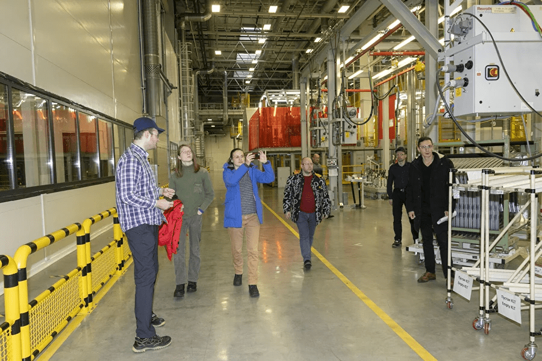

Победителем трека «Человек и пространство», посвященного связанности территории Российской Федерации за счет создания интеллектуальных транспортных и телекоммуникационных систем, стал Владимир Глинщиков, ученик 10-го класса Университетской школы ДВФУ. Под руководством наставника трека, популяризатора космонавтики, основателя научно-просветительского проекта «Мы верим в космос», Дениса Прудника финалист разработал проект аквароботов для морских ферм.
Визит на «КАМАЗ» – специальный приз Ростеха за победу в треке «Человек и пространство». Экскурсия по производству дала победителю трека возможность погрузиться в мир новейших технологий производства грузового автомобиля. Сотрудники «КАМАЗа» показали победителю новый современный Завод каркасов кабин, обладающий самым высоким уровнем автоматизации в России. На его территории расположены цеха сварки, окраски кабин, логистики и энергоцентр. Кроме того, победитель посетил Автомобильный завод, Научно-технический центр «КАМАЗа», конструкторские подразделения, рабочие места конструкторов научно-технического центра, а также полигон, на котором проводятся испытания новых автомобилей.
«Меня удивило всё: и огромный масштаб предприятия, и прорывные технологии, которые уже здесь используются, и создаваемые на предприятии беспилотные автомобили. Полученная информация поможет мне развить свой проект»поделился своими впечатлениями Владимир Глинщиков.
«Беспилотные технологии уже сейчас помогают решать повседневные задачи обычных людей (например, доставка товаров, почты и т.д.), самых разных отраслей (поиск полезных ископаемых, мониторинг энергетических сетей, сельхозугодий, лесов и т.д.), а также выполняют специальные задачи, связанные с безопасностью и защитой наших национальных интересов. Они расширяют спектр человеческих возможностей, раздвигают границы и позволяют легко заглянуть туда, где для обычного человека не всегда есть дорога.
Безусловно, это технологии будущего, которые с течением времени будут совершенствоваться все больше и все шире распространяться. Над этим работают, в том числе и наши специалисты. Для этого мы готовим кадры в партнерстве с ведущими образовательными учреждениями. И заинтересованы в привлечении талантливой молодежи, которая обеспечит будущие технологические прорывы», – сказал директор Департамента конверсионной деятельности Госкорпорации Ростех Максим Нагайцев.